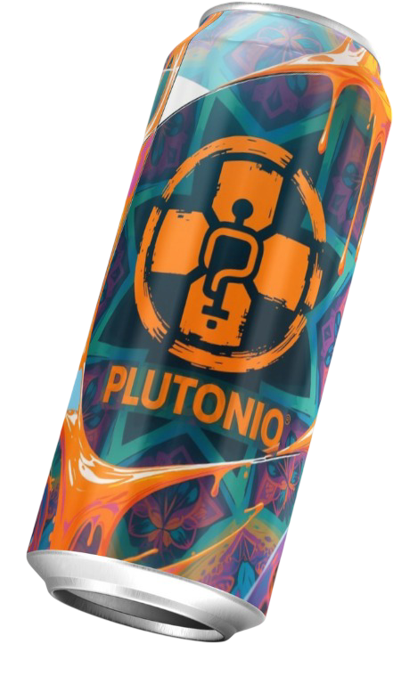

Calma la tos
El kion y la miel ayudan a suavizar la garganta irritada y a disminuir la sensación de tos constante.
Pulonio es una bebida a base de kion (jengibre), miel y limón, pensada para acompañarte cuando sientes tos o malestar por la fiebre. No reemplaza a un tratamiento médico, pero puede ser tu aliado natural.
⚠️ Importante: Pulonio es un producto ficticio y no sustituye la consulta médica.

Inspirado en remedios tradicionales con kion, pero pensado como una bebida lista para tomar.
El kion y la miel ayudan a suavizar la garganta irritada y a disminuir la sensación de tos constante.
La combinación tibia de kion y limón puede acompañar los momentos de malestar por fiebre ligera.
Sin estímulos extremos: una sensación ligera de energía para continuar con tus actividades diarias.
Cada componente de Pulonio está pensado para acompañar tu bienestar de forma natural.
Conocido como jengibre, tradicionalmente usado para calmar la tos y aliviar el malestar de garganta.
Aporta dulzor natural y sensación de suavidad en la garganta, ideal en épocas de resfrío.
Refresca, da un toque cítrico y complementa tu alimentación con una fuente de vitamina C.
Base purificada para una bebida ligera, fácil de tomar y de integrar en tu rutina diaria.
Una guía rápida para aprovechar mejor tu bebida de kion.
Antes de abrir, agita la botella o lata para mezclar bien el kion, la miel y el limón.
Si buscas aliviar la garganta, tómalo ligeramente tibio. Si quieres refrescarte, disfrútalo frío.
Úsalo como complemento a tu descanso, hidratación y las indicaciones de tu médico.
Resolvemos algunas dudas sobre Pulonio y su uso.
No. Pulonio no es un medicamento ni cura enfermedades. Es una bebida que acompaña tu bienestar con ingredientes tradicionales. Ante síntomas fuertes o persistentes, consulta siempre a un profesional de la salud.
Como bebida, se puede consumir de forma moderada durante el día. Si estás bajo medicación o tienes una condición específica, consulta con tu médico antes de incluir nuevas bebidas en tu rutina.
Por seguridad, se recomienda que niños, gestantes o personas con alergias a kion, miel o limón consulten primero con un profesional de salud antes de consumir productos similares.
Cualquier combinación con medicamentos o tratamientos debe ser consultada con un médico. Pulonio es solo un acompañante de tu estilo de vida saludable.
Déjanos tus datos y simula una suscripción para recibir novedades de Pulonio.